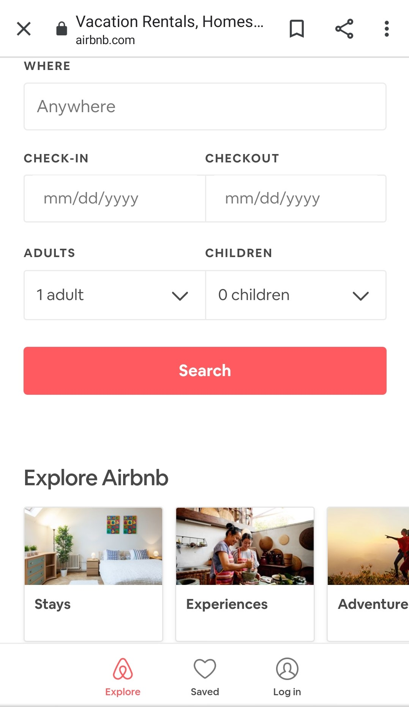
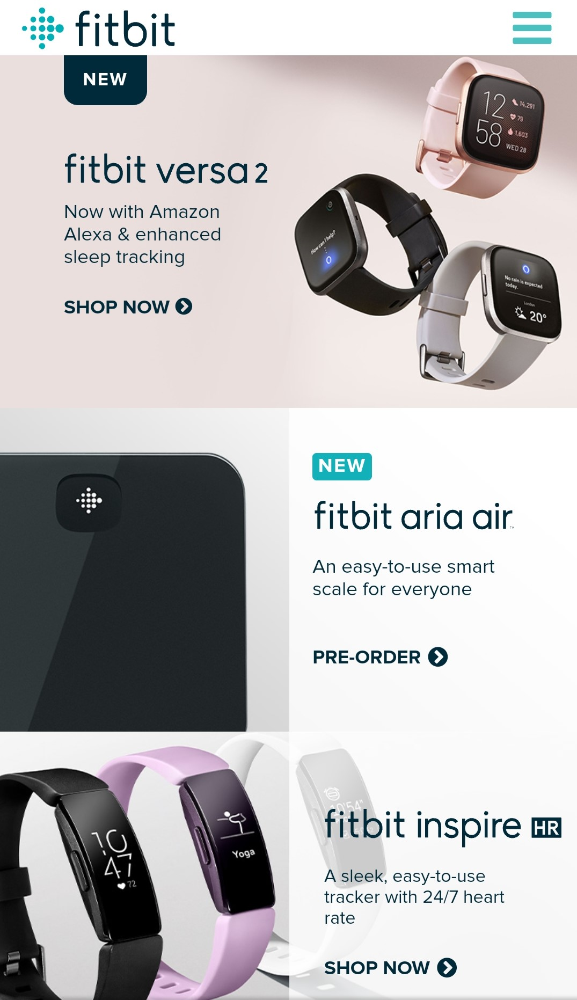
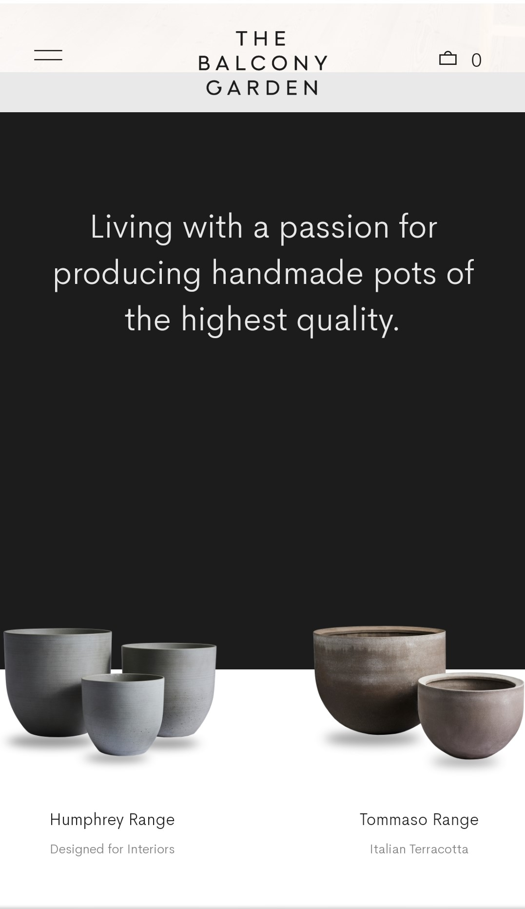

Hick's Law
AirBnb
AirBnb's Website
How does this law affect web development? In essence, finding the balance of amount of stimuli and the functions that provide the perfect reaction time. If there are too many stimuli, it is a long, tedious website that has way too much information to digest, the user might take too long to react, or react by exiting the site. Too little, and the website is redundant/not providing adequate options and not satisfying all of the user's requests and questions. AirBnb is a great example of Hick's Law. It provides the users' perfect amount of options and decisions for that specific cause that he/she entered the website for. You are able to open specific tabs for experiences, places to stay, or adventures. Inside each of these tabs, you can find good places where these options are provided. One can enter the exact information to book as well.
Visual Hierarchy
FitBit
FitBit's Website
Visual Hierarchy speaks about the order in which importance the elements are placed. The user only remembers specific significant details about a certain product or service. The more concise and powerful the statements, the more memorable it is for the user. FitBit displayed this quite well. Each product was placed in a modern-styled layout, each with a few lines that give the overall idea of the product. Both new and old products are shown and a button to order or pre-order is listed at the bottom, in case the user was impressed to buy.
White Space and Clean Design
The Balcony Garden
The Balcony Garden's Website
White Space and Clean Design makes websites appealing and relaxed to the eye. In actual fact, White Space needn't be white! This combo provides an elegance and quality to the site. White Space helps to point out certain distinctive features for the user. The clean design coupled with white space helps guide the user. The developer can now create a memorable experience for the user by navigating through a specific thought pattern. The Balcony Garden uses a great about of White Space and Clean Design. Each of the pottery ranges have a beauty and elegance about them. In the picture, the two ranges are singled out and user attention is solely focus on them. If the user is looking for a pot similar to that design, he/she can click on that product and more information will be given about it.